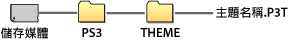

設定 > 主題設定
主題設定
調整背景、字型等XMB™的相關設定。
主題
設定要顯示於XMB™的圖示或背景等設計。可按照以下方法設定主題。
選擇已預先安裝的主題
選擇已預先安裝至PS3™的主題。
透過PS3™下載主題
在PS3™的 （PlayStation®Store）或
（PlayStation®Store）或 （網路瀏覽介面）的網站下載主題時，會於下載後自動安裝。
（網路瀏覽介面）的網站下載主題時，會於下載後自動安裝。
自遊戲光碟或市售的Blu-ray Disc（藍光光碟）影像軟件（BD-ROM）安裝主題
若要安裝已收錄主題檔案的光碟上的主題，請選擇 （遊戲）的
（遊戲）的 圖示，並選擇想使用的主題檔案。安裝完成後會自動設定為主題。
圖示，並選擇想使用的主題檔案。安裝完成後會自動設定為主題。
使用個人電腦下載／新建主題
使用電腦從網頁下載或新建主題時，需於儲存媒體內建立名為［PS3］－［THEME］的資料夾，於其中保存主題檔案。請以［.P3T］格式保存主題。

插入保存了主題檔案的儲存媒體，再選擇 （設定）＞
（設定）＞ （主題設定）＞[主題] ＞[安裝〕，將主題安裝至硬碟。
（主題設定）＞[主題] ＞[安裝〕，將主題安裝至硬碟。
提示
- 若無主題檔案的適切圖示資料，會顯示暫代的圖示或XMB™的標準圖示。
- 若主題檔案包含數個背景資料，主題的背景會以隨機方式變化。
- 新建主題檔案時的必要工具已開始提供給開發者（需準備市面販售的繪圖軟件）。詳細請參閱各區域的官方網站。
- 部分PS3™機種需於使用儲存媒體時，搭配非隨附的USB讀卡機等。
刪除主題
選擇要刪除的主題後按下 按鈕，再選擇［刪除］。
按鈕，再選擇［刪除］。
顏色
設定XMB™的背景顏色。
| 標準 | 設定為標準的背景顏色。 |
|---|---|
| 各種顏色 | 將選擇的顏色設定為背景顏色。 |
背景
將主題使用的背景和選擇 （相片）時登錄為桌布的圖像等設定為XMB™的桌布。
（相片）時登錄為桌布的圖像等設定為XMB™的桌布。
| 亮度 | 變更背景的亮度。 |
|---|---|
| 標準 | 設定為標準主題。 |
| 經典 | 設定使用[經典]主題。 |
| （主題名稱） | 設定為選擇［主題］時挑選的主題背景。 |
| 桌布 | 將選擇（相片）時登錄為桌布的圖像設定為XMB™的桌布。 |
字型
設定XMB™及於 （好友）中傳送簡訊等要使用的字型。系統軟件的顯示語言若設定為韓文／簡體中文／繁體中文時，無法調整此設定。
（好友）中傳送簡訊等要使用的字型。系統軟件的顯示語言若設定為韓文／簡體中文／繁體中文時，無法調整此設定。
提示
可選擇的字型種類可能因顯示語言而異。